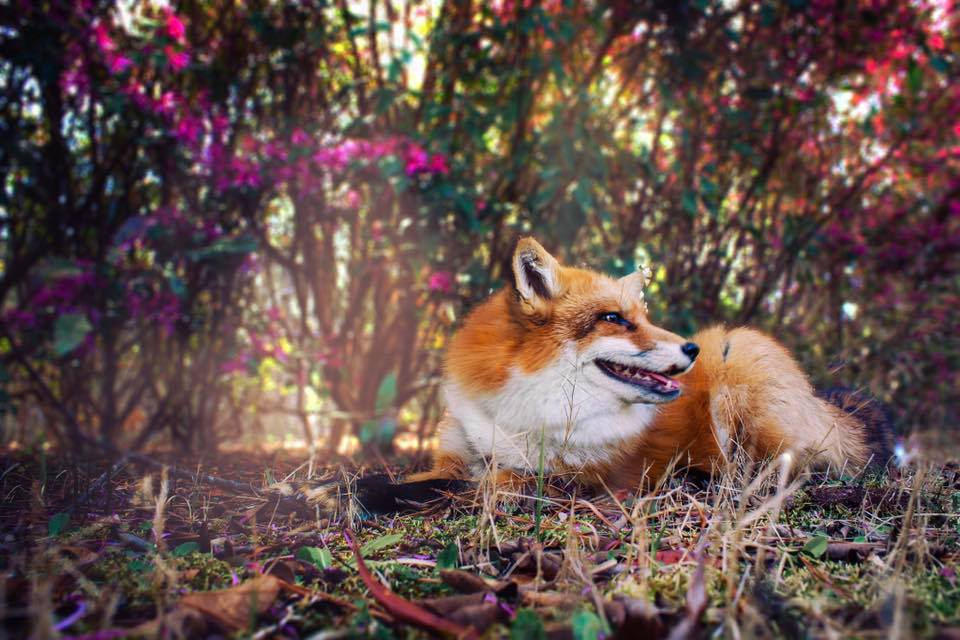
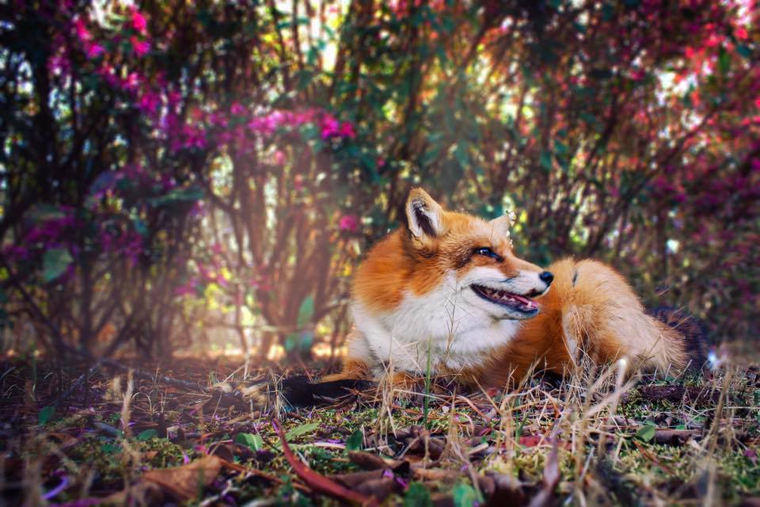

SNAGGLENATION
FAMILY
Everyone has a story to tell, even animals. Meet the rest of our family and join our community of Animal Lovers.

JUNIPER
Juniper is a tame North American Red Fox. We adopted her when she was only five weeks old after learning that she needed a home. I had worked with foxes in rescues in the past and with that hands on experience knew that I could give her the home she deserved. Foxes, like minks and other plush animals have been bred for their fur for over a hundred years. Juniper and foxes like Juniper are considered "domestic fur-bearing animals" and being that she is descended from animals that have spend many generations in captivity meant that she genetically lost many of her natural instincts. Unfortunately this meant that she would be unable to live naturally in the wild. And so began our journey with the snaggle-toothed queen.
MOOSE
Patient Moose. The Australian shepherd malamute mix. He's coming up on his seventh year with us and I wouldn't have it any other way. Moose came to us after his six siblings, and his mother were dropped off outside of a veterinary office after closing hours. His mother died of canine parvovirus shortly after being taken in. I had been volunteering at the time and as soon as I saw him I knew he was going to come home with me. He was the first dog I ever adopted, the first dog that I could call my own. He's a special soul and because of his patient nature he's helped many smaller animals learn to feel comfortable and safe before going to their forever homes.

PETUNIA
Petunia, the white faced sugar glider. We found Petunia at a reptile convention being sold as an "easy pet" for small children, she was shaking and obviously terrified after being passed around between people for hours. We immediately told the vendor we would take her after seeing her condition. Upon bringing her home we realized she had quite a few health problems and some uncontrollable twitches due to being malnourished. After just a week of a proper diet she started to improve and is doing much better these days. We later found out that she has her own snaggle tooth which causes her tongue to hang out of her mouth, making her a perfect fit in our family of misfits.

PEACH
Meet Peach. Peach is Petunia's new companion. Like Petunia, Peach also came from poor living conditions. She had scores of issues due to improper diet. It caused her fur to be more yellow than cream, which is referred to as "staining". She also suffered from growth issues in both of her back legs after not receiving enough calcium. This causes her to have bowed back legs and while it doesn't currently inhibit her, it may cause her to have joint problems later in life. Sugar gliders can actually live 8-15 years in captivity. Peach had also been living in an unclean environment which caused her to have respiratory issues. After a few vet visits and being on antibiotics she's now doing much better and is happily spending her days cuddling with Petunia.

OLIVE
Olive was found in a flower pot as a tiny kitten before being brought to us, but has been our little flower ever since. She's a small lady and is approaching her first year in our home. She's now fully adjusted to living with us and spends most of her time in her natural habitat (cardboard boxes) and loves hanging out with her best friend, who is a felt lobster with catnip guts. She seems to be fueled by catnip and hate. Update: Olive has since moved to live with our prior partner, she's living her best life.
FIG
Meet Fig. Fig came to us after being rescued by "SaveAFox". He was born on a fur farm and would have become part of someones coat if not for a tragic bacterial infection that caused him to lose his left foot, most of his toes on his remaining feet, and sight In his eye. He was surrendered after the fur farm would no longer be able to use his pelt due to the abnormalities. Now Fig is the sweetest animal in the family. He never ceases to surprise me with how loving and kind he is to not only myself, but all of the other animals that live with us. He is often the first one to befriend any of our foster animals and greats everyone with a happy smile.
CONTACT US
PLEASE COMPLETE THE FORM BELOW